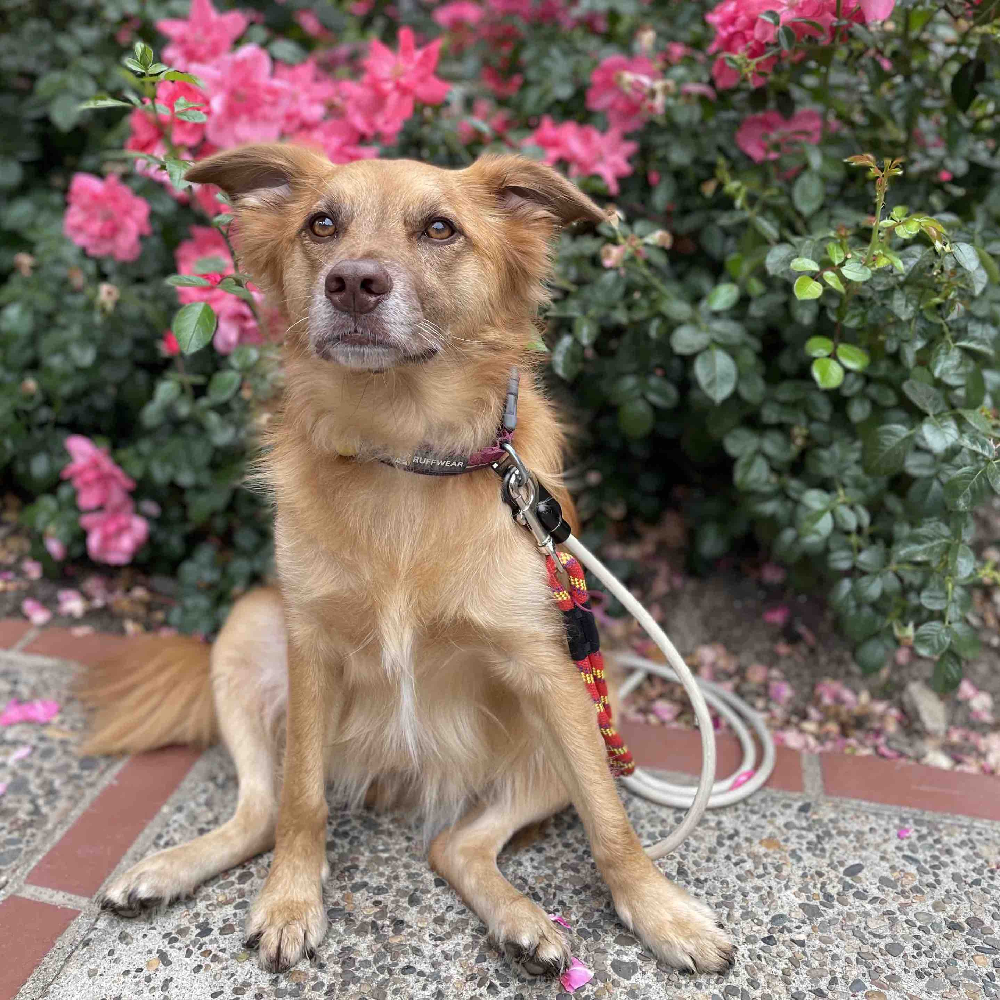

Hey there, I'm Pius!
I am a mixed-breed pup from Kansas City, Missouri.
If you've found your way to my website, I must have gotten
separated from my owners, Gabby and Elias.
Thank you so much for making sure I am safe! There is one
extremely important thing you need to know about me: I have
idiopathic epilepsy. I regularly have grand mal
seizures and oftentimes have cluster seizure episodes (i.e., I
seize multiple times in a day). I take several medications to
control my epilepsy and going without these medications will be
fatal for me.
Doctors who know me
Union Hill Animal Hospital
3025 Main St, Kansas City, MO 64108
Mission Veterinary Emergency and Specialty
5914 Johnson Dr, Mission, KS 66202
University of Missouri-Columbia Veterinary Health Center (Neurology)
900 E Campus Dr, Columbia, MO 65211
Medications
| Medication | Amount | Frequency |
|---|---|---|
| Phenobarbital | 100mg | Every 12 hours |
| Potassium Bromide | 250mg | Every 12 hours |
| Levetiracetam | 1500mg | Every 8 hours |
| Zonisamide | 200mg | Every 12 hours |
| Midazolam | 20mg | As-needed intranasally to control clusters |